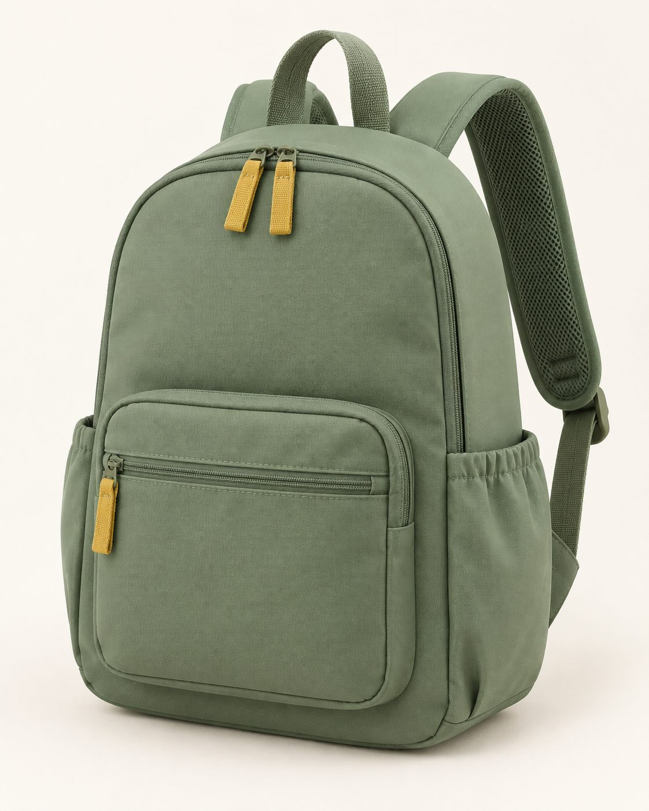
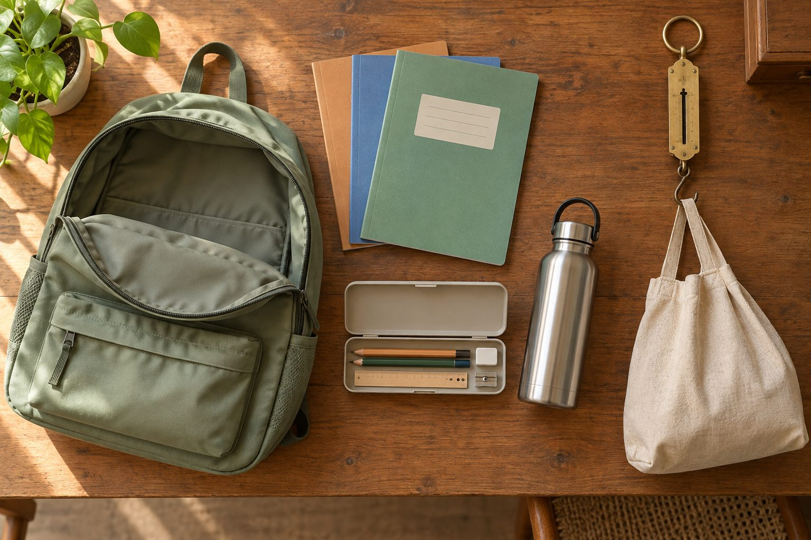

Every Tola bag has its own empty weight and the loaded weight advised for the child's class sewn into the strap. Weigh it at the door and you know if it is too heavy.
CONCEPT BRAND - NOT ON SALE - NAME IS PROVISIONALSources: NCERT policy, Indian Pediatrics. The government has also asked BIS to review its 1982 school-bag standard (Mint).

Concept spec, none of it built or lab-tested. The image is an illustration, not a real product.

Example of the format. NCERT's range equals 10% of its body-weight figures, so I read it as the whole loaded bag, bag included. That reading is unconfirmed against the policy text.
| Class | Average body weight (kg) | Recommended bag weight (kg) |
|---|---|---|
| I-II | 16-22 | 1.6-2.2 |
| III-V | 17-25 | 1.7-2.5 |
| VI-VII | 20-30 | 2-3 |
| VIII | 25-40 | 2.5-4 |
| IX-X | 25-45 | 2.5-4.5 |
| XI-XII | 35-50 | 3.5-5 |
Pre-primary: no bag recommended. Source: NCERT School Bag Policy 2020, Table 2. NCERT says schools can make their own table, so these are suggestions.
| Brand | Positioning seen | Price seen | Where Tola differs |
|---|---|---|---|
| Skergo | Calls itself India's 1st ergonomic backpack; support board, aluminium rod, ages 4-15 | Rs 2,899-3,899 (sale) | Tola is lower priced and leads with load information, not spine hardware. |
| Basil | Ergonomic 20L school bag for ages 6-11, lists BIS certification | Rs 999-1,899 | Already cheap and ergonomic. Tola's difference is the label and weigh-in, not the bag. |
| Harissons (Sine) | 530 g, ventilated back panel | Rs 1,662 | Lightweight bag exists. They state weight, not class-wise advised load. |
| Skybags | Mainstream school bags | Skybags Rs 1,329-1,600 on school models | Style led. The Skybags school-bag page I read shows no class-wise load advice. |